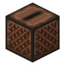
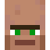
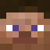

JBL-колонка
Берёшь в руку, жмёшь ПКМ, и открывается плеер со всей музыкой сервера. Свои .ogg и .mp3 кидаешь прямо в окно, и трек слышат все, кто рядом.
Плеер
Экран как в игре, один в один: тот же список, те же кнопки, те же подсказки. Двойной клик по треку запускает его. Свои файлы кидай прямо в окно, они сохранятся в этом браузере.
В руке
Пока колонка в руке и играет, внизу слева висит плашка: мигающая нота, название бегущей строкой, процент и полоска громкости. Сменишь слот, и она пропадёт. Во второй руке тоже работает.
Колонка
Модель из Blockbench, одна коробка 7 × 14,75 × 7,75 пикселя, два динамика по торцам. Всё, что колонка помнит, хранится прямо в предмете: справа живой NBT, он меняется, пока играет музыка.
Как трек доходит до всех
Загрузишь файл в плеере, и здесь видно, что происходит: трек кусками летит на сервер, ложится в библиотеку, а когда включаешь, звук получают все, кто рядом с тобой.

Сервербиблиотека: 4
Жительрядом
Steveдалеко, не видитКрафт
Железо по углам, редстоун сверху, бамбук по бокам, нотный блок в центре и снизу кнопка. Подойдёт любая: тег zitraksmode:jbl_buttons, поэтому в слоте они сменяют друг друга.
История
Достижения
Скрытые, как в игре: пока не получишь, не видно, что это. Вся ветка целиком живёт в общем древе мода на главной.
Жми на динамик. Желательно ночью.